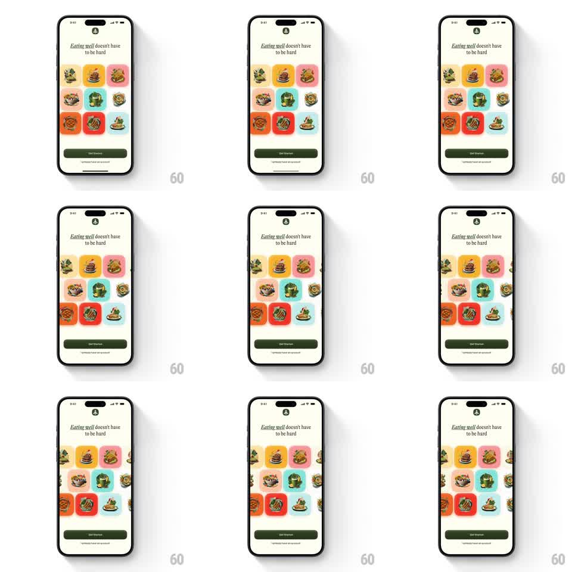

Media
Frame-by-frame

Rebuild this animation 1:1: Alma's intro screen - under the "Eating well doesn't have to be hard" headline, a wall of colorful food-illustration tiles scrolls upward in an endless multi-column ticker, each column drifting at its own pace.

Rebuild this animation 1:1: Alma's intro screen - under the "Eating well doesn't have to be hard" headline, a wall of colorful food-illustration tiles scrolls upward in an endless multi-column ticker, each column drifting at its own pace. ## Integration Integration: stack-agnostic spec - springs given as stiffness/damping, timed motions as duration + curve; map every value to your framework and animation library of choice. ## Scene Cream screen: leaf logo, serif headline "Eating well doesn't have to be hard" (well in italic), then a 3-column wall of rounded tiles - each a saturated color block (red, yellow, pink, teal, orange) with a flat food illustration - clipped by the screen, a dark "Get Started" button and a terms line at the bottom. ## Motion spec Pattern: infinite vertical multi-column ticker, indefinite. - Scroll: the tile wall scrolls upward continuously (~30pt/s), the middle column moving slightly slower or in the opposite direction for parallax contrast; tiles wrap seamlessly. - Fade edges: the wall fades to the background at top and bottom (gradient masks, ~48pt). - Entrance: on first load the wall slides up into place (500ms, ease-out) from 60pt below with a fade. ## Calibration - Tiles keep uniform gaps and rounded corners while scrolling - the loop point must be invisible. - The headline and button stay fixed; only the tile wall moves. ## Reduced motion Static tile wall; no scrolling. ## Don't miss - Tiles are bold flat illustrations on saturated blocks - no photos, no gradients. - The wall extends past the screen edges on all sides - it never shows its bounds.